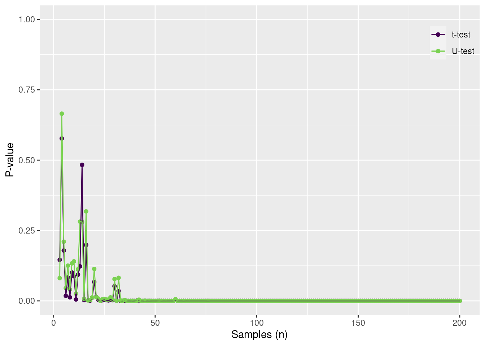
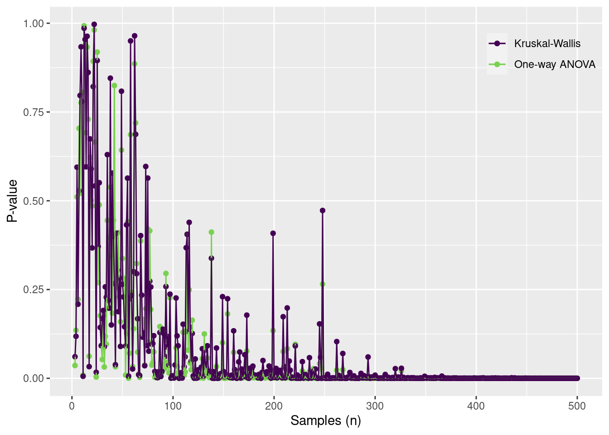

The unranked and ranked data from the Iris dataset. Note the change in shape
Correlation
The Pearson correlation coefficient3 describes the linear (i.e., straight-line) relationship between two variables. The Spearman correlation describes the monotonic relationship between two variables (Lee Rodgers and Nicewander 1988).
3 ピアソン相関係数
Lee Rodgers, Joseph, and W. Alan Nicewander. 1988. “Thirteen Ways to Look at the Correlation Coefficient.”The American Statistician 42 (1): 59–66. https://doi.org/10.1080/00031305.1988.10475524.
The Pearson correlation is bounded by -1 and 1 (-1 \le r_{xy} \le 1). S_{xy} is the covariance, S_{xx} and S_{yy} are the variances of x and y, respectively.
Conduct the Pearson’s product-moment correlation test.
cor.test(x, y, method ="pearson")
Pearson's product-moment correlation
data: x and y
t = 43.387, df = 148, p-value < 2.2e-16
alternative hypothesis: true correlation is not equal to 0
95 percent confidence interval:
0.9490525 0.9729853
sample estimates:
cor
0.9628654
Calculate the Spearman’s rank correlation using cor().
cor(x, y, method ="spearman")
[1] 0.9376668
Test the Spearman’s rank correlation.
cor.test(x, y, method ="spearman", exact = F)
Spearman's rank correlation rho
data: x and y
S = 35061, p-value < 2.2e-16
alternative hypothesis: true rho is not equal to 0
sample estimates:
rho
0.9376668
Compare the two correlations coefficients
Comparing the performance of the two correlations using simulation. Assume that the Pearson correlation coefficient is 0.5.
Z |>as_tibble(.name_repair =~c("V1", "V2")) |>slice_sample(n =5000) |>ggplot() +geom_point(aes(x = V1, y = V2), alpha =0.2)
Multivariate normal distribution with a mean of (0,0) and a covariance matrix of \Sigma = \begin{bmatrix}1&0.5\\0.5&1\end{bmatrix}.
Calculate the Pearson and Spearman rank correlation for n samples. The correlation coefficient should converge to 0.5.
n =c(seq(10, 100, by =10),seq(100, 1000-100, by =100),seq(1000, 10000-1000, by =1000) )sample_from_z =function(n, z, method) { z = z[sample(1:nrow(z), n), ]cor(z[ ,1], z[ ,2], method = method)}dout =tibble(n = n) |>group_by(n) |>mutate(pearson =map_dbl(n, sample_from_z, z = Z, method ="pearson")) |>mutate(spearman =map_dbl(n, sample_from_z, z = Z, method ="spearman"))
Code
dout |>ggplot() +geom_hline(yintercept = Sxy) +geom_point(aes(x = n, y = pearson, color ="Pearson")) +geom_point(aes(x = n, y = spearman, color ="Spearman")) +geom_line(aes(x = n, y = pearson, color ="Pearson")) +geom_line(aes(x = n, y = spearman, color ="Spearman")) +scale_color_viridis_d("", end =0.8) +scale_y_continuous("Correlation coefficient", limits =c(0, 1)) +scale_x_continuous("Samples (n)") +theme(legend.position =c(1,1),legend.justification =c(1,1),legend.background =element_blank())
The Pearson and Spearman rank correlation coefficients for n samples The thick line indicates the true correlation coefficient.
Parametric and non-parametric tests
One-sample test
Parametric test
The (one-sample) t-test.
t.test(Petal.Length ~1, data = iris)
One Sample t-test
data: Petal.Length
t = 26.073, df = 149, p-value < 2.2e-16
alternative hypothesis: true mean is not equal to 0
95 percent confidence interval:
3.473185 4.042815
sample estimates:
mean of x
3.758
The lm() function can also be used to conduct the test.
lm(Petal.Length ~1, data = iris) |>summary()
Call:
lm(formula = Petal.Length ~ 1, data = iris)
Residuals:
Min 1Q Median 3Q Max
-2.758 -2.158 0.592 1.342 3.142
Coefficients:
Estimate Std. Error t value Pr(>|t|)
(Intercept) 3.7580 0.1441 26.07 <2e-16 ***
---
Signif. codes: 0 '***' 0.001 '**' 0.01 '*' 0.05 '.' 0.1 ' ' 1
Residual standard error: 1.765 on 149 degrees of freedom
Non-parametric test
The (one-sample) Wilcoxon test
wilcox.test(iris$Petal.Length)
Wilcoxon signed rank test with continuity correction
data: iris$Petal.Length
V = 11325, p-value < 2.2e-16
alternative hypothesis: true location is not equal to 0
Alternative version, however we need to determined the signed ranks5 of the observations.
5 符号順位
signed_rank =function(x) sign(x) *rank(abs(x))
lm(signed_rank(Petal.Length) ~1, data = iris) |>summary()
Call:
lm(formula = signed_rank(Petal.Length) ~ 1, data = iris)
Residuals:
Min 1Q Median 3Q Max
-74.5 -34.5 0.5 37.0 74.5
Coefficients:
Estimate Std. Error t value Pr(>|t|)
(Intercept) 75.500 3.544 21.31 <2e-16 ***
---
Signif. codes: 0 '***' 0.001 '**' 0.01 '*' 0.05 '.' 0.1 ' ' 1
Residual standard error: 43.4 on 149 degrees of freedom
Two-sample test
Parametric test
This is the Welch’s t-test.
testdata = iris |>filter(!str_detect(Species, "setosa"))t.test(Petal.Length ~ Species, data = testdata)
Welch Two Sample t-test
data: Petal.Length by Species
t = -12.604, df = 95.57, p-value < 2.2e-16
alternative hypothesis: true difference in means between group versicolor and group virginica is not equal to 0
95 percent confidence interval:
-1.49549 -1.08851
sample estimates:
mean in group versicolor mean in group virginica
4.260 5.552
The lm() version of the test.
lm(Petal.Length ~ Species, data = testdata) |>summary()
Call:
lm(formula = Petal.Length ~ Species, data = testdata)
Residuals:
Min 1Q Median 3Q Max
-1.260 -0.360 0.044 0.340 1.348
Coefficients:
Estimate Std. Error t value Pr(>|t|)
(Intercept) 4.26000 0.07248 58.77 <2e-16 ***
Speciesvirginica 1.29200 0.10251 12.60 <2e-16 ***
---
Signif. codes: 0 '***' 0.001 '**' 0.01 '*' 0.05 '.' 0.1 ' ' 1
Residual standard error: 0.5125 on 98 degrees of freedom
Multiple R-squared: 0.6185, Adjusted R-squared: 0.6146
F-statistic: 158.9 on 1 and 98 DF, p-value: < 2.2e-16
Non-parametric test
This is the Mann-Whitney U test (i.e., two-sample Wilcoxon test). One important consideration of this test is shape of the distributions for each group. If the groups have the same shape, then the Mann-Whitney U test is a test of differences in the medians. If the groups have different shapes, then the Mann-Whitney U test is a test of differences in the distributions.
wilcox.test(Petal.Length ~ Species, data = testdata)
Wilcoxon rank sum test with continuity correction
data: Petal.Length by Species
W = 44.5, p-value < 2.2e-16
alternative hypothesis: true location shift is not equal to 0
The lm() version using the signed_rank() function.
ggplot(data) +geom_histogram(aes(x = obs, fill = group),position =position_dodge())
`stat_bin()` using `bins = 30`. Pick better value with `binwidth`.
wilcox.test(obs ~ group, data = data)
Wilcoxon rank sum test with continuity correction
data: obs by group
W = 483552, p-value = 0.1923
alternative hypothesis: true location shift is not equal to 0
Performance evaluation
Evaluating the performance of the two-sample tests when the effect size is 1 and the standard deviations are 1.
Code
testdata =tibble(group =c("A", "B"),mu =c(2, 3),sd =c(1, 1)) |>group_by(group) |>mutate(obs =map2(mu, sd, rnorm, n =500)) |>unnest(obs)td2 =tibble(n =3:200) |>mutate(out =map(n, function(n, data) { df = data |>group_by(group) |>slice_sample(n = n) tout =t.test(obs ~ group, data = df)$p.value uout =wilcox.test(obs ~ group, data = df, exact = F)$p.valuetibble(toutp = tout, uoutp = uout) }, data = testdata)) |>unnest(out)ggplot(td2) +geom_point(aes(x = n, y = toutp, color ="t-test")) +geom_point(aes(x = n, y = uoutp, color ="U-test")) +geom_line(aes(x = n, y = toutp, color ="t-test")) +geom_line(aes(x = n, y = uoutp, color ="U-test")) +scale_color_viridis_d("", end =0.8) +scale_y_continuous("P-value", limits =c(0, 1)) +scale_x_continuous("Samples (n)") +theme(legend.position =c(1,1),legend.justification =c(1,1),legend.background =element_blank())

When sample size is large, the P values convege to zero. Note that either test performs well, especially since the data is from a normal distribution.
Evaluating the performance of the two-sample tests when the effect size is 1 and the standard deviations are 1 and 5.
Code
testdata =tibble(group =c("A", "B"),mu =c(2, 3),sd =c(1, 5)) |>group_by(group) |>mutate(obs =map2(mu, sd, rnorm, n =500)) |>unnest(obs)td2 =tibble(n =3:500) |>mutate(out =map(n, function(n, data) { df = data |>group_by(group) |>slice_sample(n = n) tout =t.test(obs ~ group, data = df)$p.value uout =wilcox.test(obs ~ group, data = df, exact = F)$p.valuetibble(toutp = tout, uoutp = uout) }, data = testdata)) |>unnest(out)ggplot(td2) +geom_point(aes(x = n, y = toutp, color ="t-test")) +geom_point(aes(x = n, y = uoutp, color ="U-test")) +geom_line(aes(x = n, y = toutp, color ="t-test")) +geom_line(aes(x = n, y = uoutp, color ="U-test")) +scale_color_viridis_d("", end =0.8) +scale_y_continuous("P-value", limits =c(0, 1)) +scale_x_continuous("Samples (n)") +theme(legend.position =c(1,1),legend.justification =c(1,1),legend.background =element_blank())
When the variances are different, then both have similar difficulty detecting an effect. Large sample numbers are needed to reduce the P value to zero.
ANOVA like tests
Parametric test
The One-way Analysis of Variance (ANOVA).
lm(Petal.Length ~ Species, data = iris) |>summary.aov()
Df Sum Sq Mean Sq F value Pr(>F)
Species 2 437.1 218.55 1180 <2e-16 ***
Residuals 147 27.2 0.19
---
Signif. codes: 0 '***' 0.001 '**' 0.01 '*' 0.05 '.' 0.1 ' ' 1
Non-parametric test
The Kruskal-Wallis rank sum test6. The test statistic7 is the \chi^2 statistic8. The null hypothesis is that all of the groups have the same distribution9.
6 クラスカル=ウォリス検定
7 検定統計量
8 カイ2乗
9 すべてのグループで分布はは同じ
kruskal.test(Petal.Length ~ Species, data = iris)
Kruskal-Wallis rank sum test
data: Petal.Length by Species
Kruskal-Wallis chi-squared = 130.41, df = 2, p-value < 2.2e-16
Examine the performance of the one-way ANOVA and the Kruskal-Wallis test for 3-level factor, where the coefficient of variation is 1 and the means are 1.5, 2.0 and 2.5.
Code
testdata =tibble(group =c("A", "B", "C"),mu =c(1.5, 2, 2.5)) |>mutate(sd =rep(1, n())) |>group_by(group) |>mutate(obs =map2(mu, sd, rnorm, n =500)) |>unnest(obs) |>ungroup()td2 =tibble(n =3:500) |>mutate(out =map(n, function(n, data) { df = data |>group_by(group) |>slice_sample(n = n) tout =summary.aov(lm(obs ~ group, data = df))[[1]][5][[1]][1] uout =kruskal.test(obs ~ group, data = df)$p.valuetibble(toutp = tout, uoutp = uout) }, data = testdata)) |>unnest(out)ggplot(td2) +geom_point(aes(x = n, y = toutp, color ="One-way ANOVA")) +geom_point(aes(x = n, y = uoutp, color ="Kruskal-Wallis")) +geom_line(aes(x = n, y = toutp, color ="One-way ANOVA")) +geom_line(aes(x = n, y = uoutp, color ="Kruskal-Wallis")) +scale_color_viridis_d("", end =0.8) +scale_y_continuous("P-value") +scale_x_continuous("Samples (n)") +theme(legend.position =c(1,1),legend.justification =c(1,1),legend.background =element_blank())
When the variances are the same, both tests quickly converge to P = 0.
Examine the performance of the one-way ANOVA and the Kruskal-Wallis test for 3-level factor, where the coefficient of variation is 3 and the means are 1.5, 2, 2.5.
Code
testdata =tibble(group =c("A", "B", "C"),mu =c(1.5, 2, 2.5)) |>mutate(cv =rep(2, n())) |>mutate(sd = mu * cv) |>group_by(group) |>mutate(obs =map2(mu, sd, rnorm, n =500)) |>unnest(obs) |>ungroup()td2 =tibble(n =3:500) |>mutate(out =map(n, function(n, data) { df = data |>group_by(group) |>slice_sample(n = n) tout =summary.aov(lm(obs ~ group, data = df))[[1]][5][[1]][1] uout =kruskal.test(obs ~ group, data = df)$p.valuetibble(toutp = tout, uoutp = uout) }, data = testdata)) |>unnest(out)ggplot(td2) +geom_point(aes(x = n, y = toutp, color ="One-way ANOVA")) +geom_point(aes(x = n, y = uoutp, color ="Kruskal-Wallis")) +geom_line(aes(x = n, y = toutp, color ="One-way ANOVA")) +geom_line(aes(x = n, y = uoutp, color ="Kruskal-Wallis")) +scale_color_viridis_d("", end =0.8) +scale_y_continuous("P-value") +scale_x_continuous("Samples (n)") +theme(legend.position =c(1,1),legend.justification =c(1,1),legend.background =element_blank())

When the variances are different, then both have similar difficulty detecting an effect. Large sample numbers are needed to reduce the P value to zero.